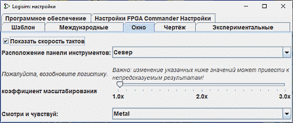

Вкладка Окно

На этой вкладке находятся настройки, влияющие на внешний вид главного окна Logisim.
-
Показать скорость тактов: если выбрано, то когда такты включены, Logisim отображает скорость, с которой он выполняет такты. Скорость тактов измеряется как средняя за предыдущую 1000 тактов. (Выключение тактов или изменение максимальной тактовой частоты очистит эту историю.)
Эта фактическая скорость тактов может быть намного меньше, чем вы бранная тактовая частота, потому что Logisim не может моделировать большие схем с очень большой скоростью. Например, максимальная скорость Logisim для достаточно большой схемы может быть 16 Гц; вы можете выбрать более высокую тактовую частоту, но фактическая скорость не будет превышать 16 Гц.
-
Расположение панели инструментов: это выпадающее меню настраивает расположение панели инструментов в пределах окна. Панель инструментов может быть расположена вдоль любой из границ окна, обозначенных как север, юг, восток и запад. Она также может быть скрыта или расположена "посередине вниз" - то есть слева от холста, но справа от панели проводника и таблицы атрибутов.
-
Коэффициент масштабирования: Позволяет определить масштабный коэффициент для всего интерфейса. Это для использования на HD-дисплеях. Вместо этого порекомендуйте использовать возможности ОС.
Нужно перезапустить программу -
Аспект интерфейса: Позволяет выбрать ряд аспектов интерфейса для экспериментов в соответствии с вашими вкусами.
Нужно перезапустить программу
Далее: Вкладка Чертёж.